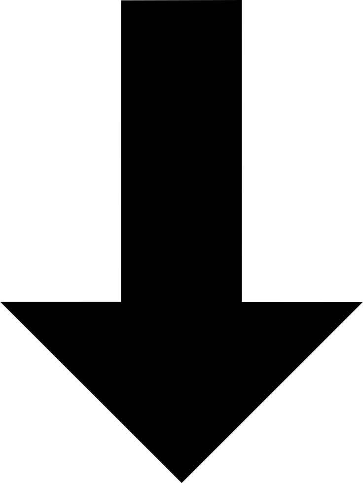
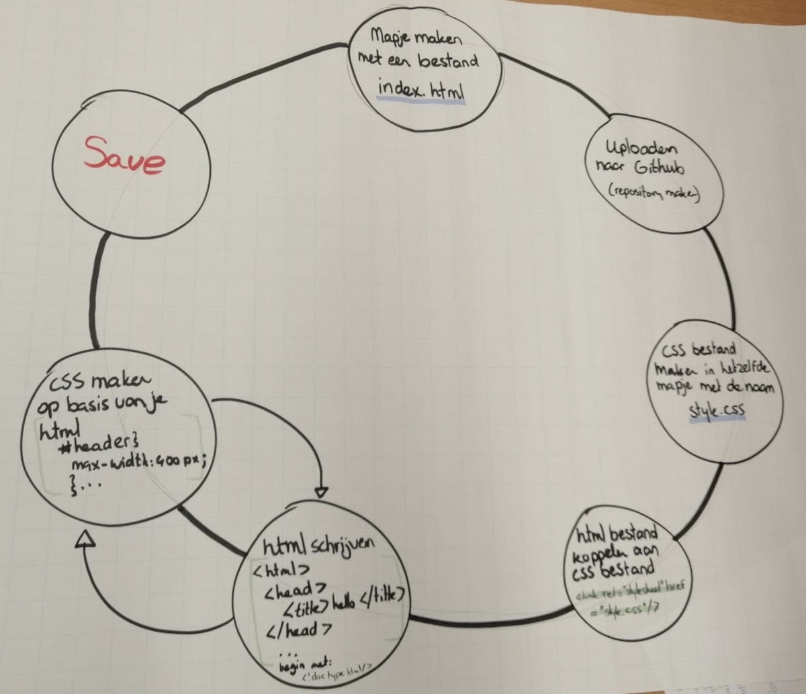

Stappenplan html/css
Stap 1: mapje maken met een bestand genaamd hmtl.css

Stap 2: uploaden naar Github (local repository aanmaken)
Stap 3: css bestand maken in hetzelfde mapje met de naam style.css
Stap 4: html bestand koppelen aan css bestand
Stap 5: html schrijven
Stap 6: css maken op basis van je html
Stap 7: Save!
Nu kan je je website opslaan en beginnen met een nieuw project.
Voor extra uitleg kan je de volgende video bekijken.
Succes!
